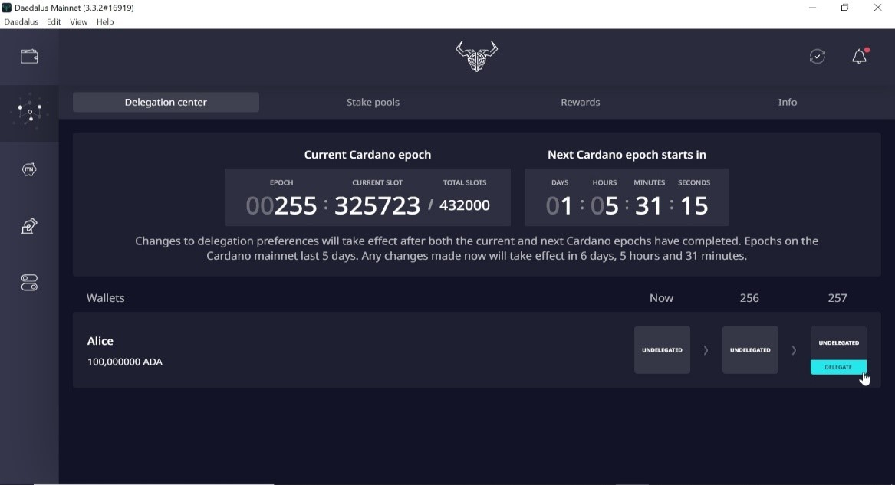
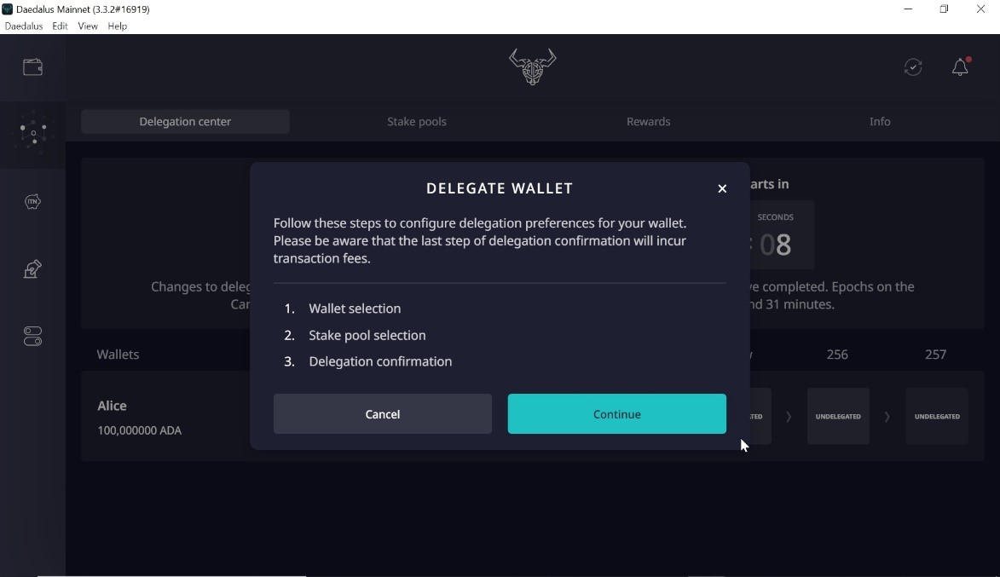
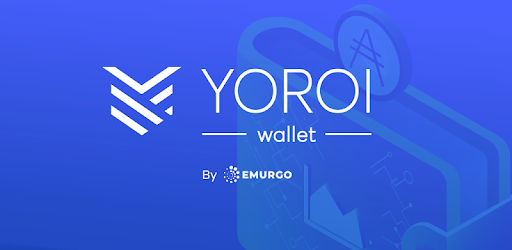

How to Delegate to [ONE1]

Content
> 1. Buy Ada
> 2. Create a Cardano Wallet
> 3. The procedure to delegate by using Daedalus or Yoroi wallet
> 4. Start earning reward
1. Buy ADA
First of all, you must buy no less than 10 ADAs in an exchange to be able to delegate, we recommend Binance (https://www.binance.com/es), since it is the most recognized exchange in the world. Once you registered in Binance and bought your ADAs, you can start to delegate by creating a Cardano wallet.
2. Create a CARDANO WALLET
You can stake your ADA and earn REWARDS using either Daedalus or Yoroi wallet. We have prepared a step by step guide on how you can easily stake your ADA within minutes in ONE pool. Just follow the guide and start earning rewards for your staked ADA.
3. The Procedure to Delegate by Using Daedalus or Yoroi Wallet
Jump to section
A. Daedalus – Desktop wallet that downloads the full blockchain to your computer
Download Daedalus wallet


Create a Wallet with a name and enter the password

There is a list of 24 words that you should write down on paper and keep in a safe place. This list of words is the wallet recovery phrase and it is the only way to recovery your wallet if your computer is lost, broken, stolen or stops working.


Then confirm it


If you have your ADAs in Binance, then you will need to withdraw your ADAs from Binance, copy the receiving address and send it to the Daedalus wallet.

After receiving the ADAs in the Deadalus, you can start to delegate

Go to delegation Center and start to delegate, clicking on “DELEGATE”
 
Choose the wallet you want to delegate

After that choose the stake pool ONE1
Ticker: ONE1Pool name: ONE Pool
Pool ID:


Finally, you will see the confirmation that you have successfully delegated your ADA coins to ONE1 pool.

B. Yoroi – Lightweight wallet which is a browser plugin

Download Yoroi wallet
Forum Post: Cardano Shelley: How to delegate from the YOROI wallet
You can use YOROI wallet for the delegation of ADA coins to a pool. It is only possible from the Shelley wallet. If you have coins in the old Byron wallet, then you will have to transfer ADA coins from the Byron wallet to the Shelley wallet. then you can delegate ADA coins to a pool. Once you create a Shelley wallet , you can start to delegate coins to our pool.
First go to the Delegation and insert a stake pool ID
Pool name: ONE Pool [ONE1]
Pool ID:

When you have inserted the stake pool ID click to the Next button. You will see a confirmation dialog. The wallet will show pool details to you. You need to provide a spending password to pay the fee and after that click to the Delegate button.

Then you will see the confirmation that you have successfully delegated your ADA coins to ONE pool.

And you can check dashboard to see details related to the delegation.
4. Start Earning Reward
Once you started to delegate your Cardano to stake, the average return rate will be between 5% – 6% APY over the year.